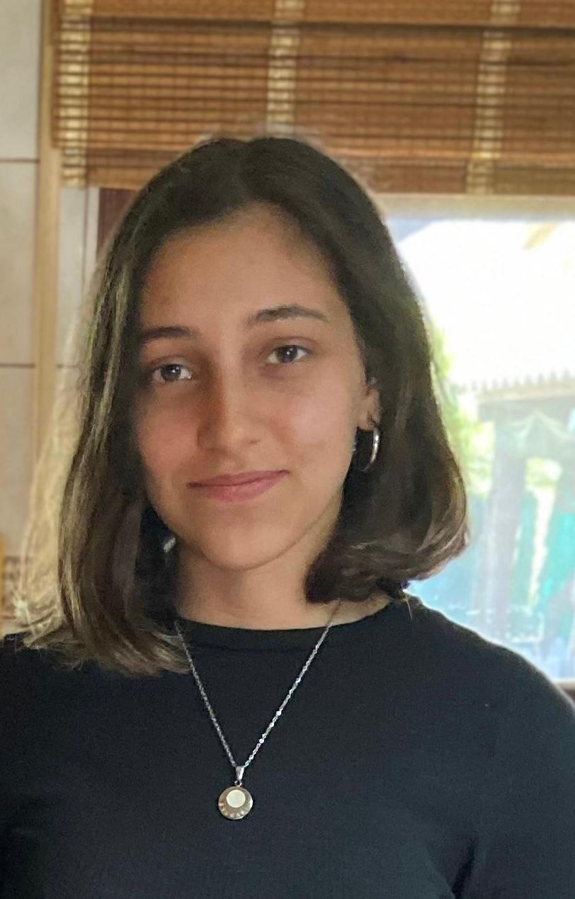

Catalina Di Marco

Bienvenidos a mi CV! Tengo 21 años y resido en Uruguay.
Actualmente estoy cursando Desarrollo Web en JaP, donde estoy aprendiendo JavaScript, HTML
y CSS. Mi objetivo es convertirme en Full Stack Developer, por lo que estoy enfocada en
adquirir habilidades tanto en el desarrollo front-end como en el back-end. Me motiva el desafío
de dominar estas tecnologías y aplicarlas en proyectos que contribuyan al avance y la
innovación en el campo del desarrollo web.